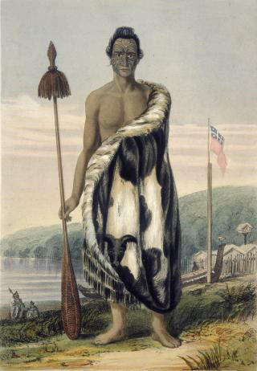
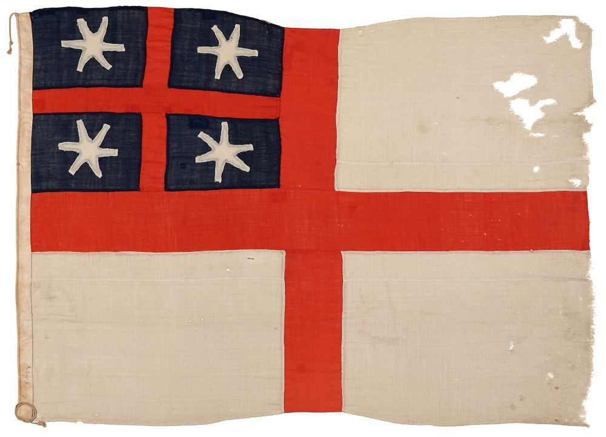

THE coast now forms a semicircular bay, at the northeast end of
which is the mouth of Port Nicholson. A low table-land jutting out into a headland which
we christened Baring Head, and the bluff end of a ridge called Turakirai, which
divides Port Nicholson from Palliser Bay, form the eastern side of the semicircle. The
western side slopes down from Sinclair Head into bare hills of moderate height, which,
with a hilly fern-covered peninsula, form the western head of the harbour. The cove, at
the head of which is the low sandy isthmus joining the peninsula to the main, might be
mistaken by an inexperienced person for the real entrance. Piloted, however, by Dicky
Barrett, we soon opened out the true channel, which lies between a two-headed bluff now
called Pencarrow Head, a mile inside of Baring Head, and the peninsula. A reef of low
black rocks is situated about mid-channel; and this seemed, as we approached from the
westward, to close the passage. We found it, however, a mile in width between the reef
and Pencarrow Head, and beat in against a good working breeze. Two islands inside the
harbour formed distinguishing marks.
Here's a lithograph of the harbour at the time, composed from Charles Heaphy's
sketches.
Captain Cook once anchored in the entrance of this magnificent
harbour. Being anxious to rejoin the other ship in company with him, he was unable to
examine it, but spoke highly of its promising appearance as a port.
It was christened Port Nicholson by the captain of a Sydney trading
vessel some years ago, after his patron and friend the harbour-master of Port Jackson,
in New South Wales.
As we advanced up the channel, which continues from two to three
miles in width for four miles from a little inside the reef, we were boarded by two
canoes, containing the two principal chiefs of the tribe living on shore. One of mature
years, named Epuni, or "Greedy," advanced with much dignity of manner to greet
Barrett as an old and respected friend, and was joined in this by his nephew
Warepori, or "Dark House," a fine commanding man of about thirty-five. They were
both nearly related to Mrs. Barrett, and had been Dicky's companions in the dangerous
wars of Taranaki. The old man, Barrett told us, was as famous for his wisdom in
council as for his former deeds of war. Warepori exercised the more immediate
direction of the tribe, having acquired a more modern reputation by recent warlike
exploits, by his attractive eloquence, and by his perfection in the native
accomplishments of canoe and house making, clearing, and marshalling his followers in
the field.
I'm not sure where Jerningham gets "greedy" from for "Epuni", but it's not really
relevant anyway, since the guy's full name is actually "Te Puni-kōkopu" which he
earned during a daring escape from a besieged pā. He jumped off a cliff into the
Waiwhakaiho River and swam to safety. "Puni" means "deep pool" and "kōkopu" is a
fresh-water fish. It's Jerningham's mistaken "Epuni" which gives the name to the
Lower Hutt suburb though.
We can rule out Jerningham's poor translation as being another of his slights against
an enemy because as we'll see throughout the book, Jerningham takes every
opportunity to praise Te Puni (he's already started with that "much dignity of
manner" line). This is because Te Puni will become a staunch ally of the New Zealand
Company, one of the few Māori leaders to do so. His younger cousin Te Wharepōuri has
a more troubled relationship with the Wakefields, and consequently suffers in
Jerningham's portrayal. (Te
Ara)

Heaphy's portrait doesn't convey much personality, nor does it show that Te Puni is
already about 60 years old. Both Te Puni and Wharepōuri have travelled to Sydney for
trade and are quite familiar with Europeans.
The two Te Āti Awa leaders have their reasons for being solicitous of allies. As they
meet with the Tory, they're in a very delicate political situation. Though
they were allies of Te Rauparaha in the migration from Taranaki, their relationship
has since deteriorated. They're warring with another of Te Rauparaha's allied
tribes, Ngāti Raukawa (Jerningham calls them the "boiling-water" tribe, possibly a
reference to their lands around Taupo), as well as those Ngāti Mutunga who had not
left for the Chatham Islands.
Having a new settlement of Europeans in their vicinity will solve a lot of problems
for Te Āti Awa. The money that inevitably accompanies trade with Europeans will help
them buy muskets to defend themselves, and just the presence of Europeans tends to
discourage violence - everyone is painfully aware of events like the Harriet
affair, and the swift and indiscriminate retribution that sometimes befalls those
who harm the new settlers.
The harbour expanded as we advanced, two deep bays stretching to
the south-west from the innermost end of the entering channel. From their western
extremity the land trends round to a valley lying at the northern end of the harbour,
about eight miles from the reef, while the hilly shores of the eastern side continue
nearly straight to the mouth of the valley; thus leaving the upper part of the great
basin four or five miles in width. In this upper part lie the two islands, behind the
largest and most northerly of which we anchored at the distance of half-a-mile from the
sandy beach at the valley's mouth. Epuni eagerly inquired the motive of our
visit, and expressed the most marked satisfaction on hearing that we wished to buy the
place, and bring white people to it. Warepori also expressed his willingness to
sell the land, and his desire of seeing white men come to live upon it.
When the followers of Epuni and Warepori formed part
of the extensive migration from Taranaki about the year 1834, they found this
district occupied by the Ngatimutunga, who had been allied with Rauperaha
during his invasion and conquest of the Strait. Tired, however, by the constant
incursions of the Ngatikahuhunu, the tribe who had been driven by them to the
east coast, but not exterminated, the Ngatimutunga determined to seek a new
location. They partly forced and partly paid the captain of an English vessel to carry
them to the Chatham Islands, which they conquered and occupied. Before they departed,
E Mare, their head chief, formally ceded the place to Warepori in exchange
for some clubs of green-stone or meri ponamu. The Ngatiawa had since that
period been much harassed by parties of the old occupants, and also by invasions from
Rauperaha's "boiling-water" allies, who had sometimes come overland down the
northern valley which I have noticed.
Missionary Notions.
The two chiefs passed the night on board. They told us that the
schooner of which we had heard had left some native missionary teachers, and that, in
compliance with Mr. Williams's instructions, they had built houses and chapels in
readiness for his arrival. They then discussed the merits of the missionary labours.
They acknowledged that they would be heartily glad to renounce war and cannibalism, but
deprecated the incessant praying and singing, which the younger chief especially
objected to, as taking the people from their industrious avocations, and substituting a
monotonous repetition, which lasted all day and night, for activity in cultivating their
potato-grounds or hollowing out canoes. "We want," said they, "to live in peace, and to
have white people come amongst us. We are growing old, and want our children to have
protectors in people from Europe. We do not want the missionaries from the Bay of
Islands: they are pakeha maori, or 'whites who have become natives,' We have long
heard of ships from Europe. Here is one at length; and we will sell our harbour and
land, and live with the white people when they come to us."
Epuni also asked us to explain what the missionaries meant
by saying, "that all the white men not missionaries were devils."
Sure. Sure Jerningham. That's exactly what they said.
September 21st. --In the morning the two chiefs renewed the
conversation about the land; and told Colonel Wakefield to go and look at the land, and
see how he liked it. They did not wish to talk any more about it until this had been
done; and Warepori said he should go and finish a large canoe which he was
working at, and that in two or three days he should have done, and my uncle would know
whether the land was good. A chief named Amahau was appointed to take him up the
river which flows through the valley of which I have spoken; and they started, with
Barrett and some natives, in a small canoe.
Several of us landed at a large village opposite our anchorage, and
witnessed the ceremony of crying over E Rangi, whom many of her numerous
relations had not seen for live years. The village lay, as its maori name
(Pitone, or "End of the Sand") implied, at the western end of the sandy beach,
which is about two miles long. The main river falls into the sea at the eastern end,
about a quarter of a mile from the hills which bound the valley to the east, and is
called the Heretaonga. A merry brawling stream, called the Korokoro, or
"throat," flows between the village and the western hills. The valley seems to preserve
an average width of two miles to a considerable distance, bounded on either side by
wooded hills from 300 to 400 feet in height. It was covered with high forest to within a
mile and a half of the beach, when swamps full of flax, and a belt of sand-hummocks,
intervened.
Tangi, Or Crying--Nayti.
The tangi, or crying, continued for a long period. The
resident natives raised the most discordant whining lamentations, streaming at the eyes,
nose, and mouth, and lacerating every part of their bodies with sharp cockle-shells
until the blood flowed. This was done, however, with considerable regularity and
attention, so as to leave scars rather ornamental than otherwise after the affair was
over. Those who wish to commemorate one of these scenes of mourning or rejoicing (for
the ceremonies and native word are precisely the same in both cases), apply a black dye
to the scar, and thus retain a sort of slight tatu.
Here's a quote from Professor Ngahuia Te Awekotuku describing this practice.
"Haehae was a more primal form of modifying the body, including the face, in
response to grief and death. Unlike ta moko, which was an erudite art form
applied by an expert tohunga with chisels and pigment, haehae was a spontaneous
expression of intense grief. Inflicted with tuhua, or obsidian flakes, sharp
mata or whaiapu stone, or razor shells; you did this to yourself. It was not
seen as mutilation, as self harm; it was a visceral compulsion, still occurring
today, but usually misread and misunderstood in modern times. Many waiata tangi,
or songs of lamentation, allude to this practice as a vivid demonstration of
loss. More females than males tended to do this, yet men also engaged in
haehae." (Memento Mori: Memento Maori – moko and memory, Ngahuia Te Awekotuku
2009)
She only describes this in connection to grief, not to rejoicing, which makes me
wonder if Jerningham has misunderstood the significance of the ceremonies he saw.
The native visitors from Te-awa-iti, who had acquired to a
considerable degree civilized ways of greeting one another, seemed anything but
comfortable while the ceremony lasted. They had forgotten the art of producing tears at
will, and had a decided objection to spoiling their fine clothes, donned for the
occasion, by any blood-letting. They therefore hung down their heads and looked
wretched, patiently waiting for the moment when native etiquette would allow them to
laugh and be cheerful, and exchange the important news from either side of the Strait.
We started with a native guide to look for pigeons, strongly
impressed with the wish of escaping to a respectful distance from the melodious
greeting.
Along the foot of the western hills we passed through numerous
flourishing potato-gardens, and were greeted and stared at by those at work in them, who
eagerly collected all the news from our guides. We found abundance of pigeons, and
returned laden to the pa. The tangi had terminated; the umu, or
"cooking-holes," were smoking away for the feast; and eager groups of inquisitive faces
were gathered round the proud narrators of our doings in Queen Charlotte's Sound. Our
friend Jim Crow found many old friends and relations at Pitone, and his audience
was by no means the least numerous or attentive. Nothing can remind one more forcibly of
the monkey who had seen the world, than a maori thus relating news. He is an
incorrigible exaggerator, and swells each minute circumstance into an affair of state,
taking delight in drawing repeated exclamations of amazement from the surrounding
badauds, who admire and envy the red night-cap or trowsers with which he may be
adorned, with quite as much zeal as they drink in his metaphors and amplifications.
Nayti--Natives.
Nayti, who belonged to a different tribe, the Kawia,
had not yet had much opportunity of indulging in this universal propensity; he seemed
shy and reserved among these people, and they appeared to regard him with more suspicion
than respect.
Enai, the Kawia chief, had taken great pains to
depreciate him in our estimation when we were at Port Gore, by saying that he was no
chief, and that his name was not Nayti, but Eriki Nono, a term, when translated,
expressive of some contempt. We attributed a good deal of this to Enai's envy of
Nayti for possessing so many fine things. Nayti, however, who had confirmed us in our
supposition that the name Eriki, applied to him constantly by the Ship Cove and
Te-awa-iti people, signified "chief," now allowed it to be only a corruption of
Dicky, by which name he had served, when a boy, in whale-boats at Cloudy Bay. We also
discovered that he was not so well related as he had stated in England, but that the
great attention paid to him by people of the highest classes there had very naturally
induced him to give a tacit consent to the term "chief" or "prince," by which they often
designated him: we therefore attached no blame to him for this assumption. The confused
idea which the natives have of relationship, too, had assisted in causing him to make
this mistake. A native will often state another man to be his tuakana, or "elder"
brother, meaning only that he is of an elder branch of the same family. In like manner,
matua, or "parent," implies no direct parentage, but often indicates only a
slight relationship of a person of the older generation in the same family. Nayti had
told us of his numerous brothers and sisters, having in fact neither one nor the other,
but meaning cousins in various degrees.
We found one solitary white man, named Joe Robinson, living in a
village near the mouth of the river, having taken a native wife from the tribe. We saw a
proof of his industry and ingenuity in the shape of a boat, the planks for which he had
cut with a hand-saw; and he had made all the nails himself out of iron hoop. This boat
earned many a pound in later times by trading round the coast.
Colonel Wakefield returned on board in the evening, having ascended
the main branch of the river until some snags prevented the further progress of the
canoe. He described the banks as of the richest soil, and covered with majestic timber,
except where fertile but scanty gardens had been cleared and cultivated by the natives.
He found some fifty people at work there, who had concealed themselves in the bush the
day before on hearing our guns when we saluted the New Zealand flag as we anchored. They
greeted him on his ascent, and presented him with potatoes cooked in readiness on his
return. At one spot they inquired of the guide whether the White men in the ship were
missionaries. Upon his answering that they were all devils, "shouts of laughter,"
Colonel Wakefield afterwards wrote, "betrayed their acquaintance with his allusion," and
their opinion of the uncharitable tenet which had "given rise to it."
The "New Zealand Flag" is what is now usually called the "United Tribes" flag. This
picture shows the flag actually raised in Petone by the New Zealand Company.

The Company had their own reasons for asserting the relevance of this flag over the
British Union Jack. If New Zealand is an independent territory, then their only
legal responsibility is to those Māori chiefs who are sovereign in New Zealand. But
if New Zealand is British territory, then they are subject to British law, and their
land-buying expedition is of dubious legality.
September 22nd, Sunday. --The breeze of yesterday had increased
into a gale, and blew with great violence from north-west. The ship, however, was not
affected by it. Several canoes came off with natives, to be present at our Church
service. One of them, a low skimming-dish thing without topside planks, filled and
turned over, ducking six or seven natives, including a woman, who were passengers. They
seemed to be perfectly used to such accidents, and some hung on to the bottom of the
canoe while the others swam with one hand and gathered the paddles which had gone
adrift. One of our boats soon rescued them, and they were furnished with dry blankets
and sent to warm themselves at the galley.
In the evening a messenger arrived from abreast of Kapiti,
with the news that a fight might be expected; the "Boiling-water" tribe having mustered
in great strength near to that place, and being set on by Rauperaha to attack the
Ngatiawa along the intervening coast. As there seemed some probability that this
invasion might reach Port Nicholson, the natives one and all went ashore in defiance of
the gale to gather the particulars and consult on measures of defence.
23rd. --I accompanied Colonel Wakefield and Barrett in an excursion
to the different settlements round the harbour. At one about half-way along the west
shore, called Nga Hauranga, we found Warepori at work with an adze on a
large canoe. The bottom of this vessel consisted of a single tree hollowed out, and was
sixty feet long. The long planks to be added on to the sides were placed between pegs
stuck into the ground so as to give them the requisite curvature. We had not been there
long before two large canoes from the southern end of the harbour put in at his call.
They were on their way to Pitone, whither two chiefs were going in order to
discuss the sale of the land. When they had landed, there were about sixty men
assembled, and they proceeded to hold a korero or "talk," on the all-important
subject, while the women prepared a feast in the native ovens, and the children gathered
round us to examine our clothes and other equipments, and to stare at our white faces.
Speeches On Sale Of Land.
Warepori put aside his adze, and introduced the matter
shortly, saying that this white man (Colonel Wakefield) had come to buy all their land
and give them white people to befriend them
A chief named Puakawa, or "Bitter Milk-thistle,"
Other sources identify this man as Waiwhetu chief Wiremu Puwhakaawe, who will
shortly meet an untimely end.
The plant "Bitter milk-thistle" is nowadays called "puha" in New Zealand.
now rose, and opposed the intended sale with great energy. He objected to it on
the score of the bad treatment which he urged might be expected from the White settlers,
and represented the folly of parting with the new home of which they had acquired so
good and secure possession after the long sufferings and dangers of their migration. He
spoke for an hour, most vigorously, and with admirable emphasis and gesticulation.
Although I did not then know enough of the language to understand all his words, and
only gathered the substance from Barrett at each pause, his expression and action
sufficiently explained the spirit and sense of his oration. An old sage named
Matangi now rose and favoured the sale. He was once the most influential chief of
the tribe, and was a near relation of Warepori's father. His extreme old age and
consequent physical debility had impaired his influence, but his experience and
venerable dignity still gave great weight to his words. His silver-white hair and long
beard, and benignant countenance, gave him the air of a Priam or a Nestor, and he almost
wept for joy when he dwelt on the prospect of white people coming to protect his
grandchildren against their enemies.
Warepori followed in the same strain; talking, however,
about himself a great deal. He said that he was known in Europe, and that the ship had
been sent to him. This is the usual habit of a powerful chief, who always seizes upon
any opportunity of maintaining his personal consequence among his people. No native ever
"bounces," as it is called by the whalers, at one of these public korero, unless
he is confident that no other member of the tribe dare contradict or ridicule his
assumption. The perfect silence maintained during Warepori's somewhat bombastic
speech, proved to how great an extent he might rely upon his authority. He was left,
however, with no audience but the leader of the opposition, Puakawa, as soon as
the cooks displayed their bill of fare. We also partook of the meal, having assigned to
us two or three newly made baskets-ful of birds and potatoes cooked deliciously. The
maori "umu," or cooking-hole, is a very complete steaming apparatus, and is used
as follows. In a hole scraped in the ground, about three feet in diameter and one foot
deep, a wood fire is first lighted. Round stones, about the size of a man's fist, are
heaped upon the faggots, and fall among the ashes as the fire consumes the wood. When
they are thus nearly red-hot, the cook picks out any pieces of charcoal that may appear
above the stones, turns all the stones round with two sticks, and arranges them so as to
afford a pretty uniform heat and surface. She then sprinkles water on the stones from a
dried gourd of which the inside has been hollowed, and a copious steam rises. Clean
grass, milk-thistle, or wild turnip leaves, dipped in water, are laid on the stones; the
potatoes, which have been carefully scraped of their peel with cockle-shells, and
washed, are placed on the herbs, together with any birds, meat, or fish that may be
included in the mess; fresh herbs are laid over the food, flax baskets follow,
completely covering the heap, and the masses then buried with the earth from the hole.
No visible steam escapes from the apparatus, which looks like a large mole-hill; and
when the old hags, who know how to time the cookery with great accuracy from constant
practice, open the catacomb, everything is sure to be found thoroughly and equally
cooked.
The little birds were chiefly the tui or mocking-bird. This
bird has been often described. It resembles a blackbird in size and plumage, with two
graceful bunches of white feathers under the neck. It abounds in the woods, and is
remarkably noisy and active. Its most common note is a mixture of two or three graduated
notes on a flute, a sneeze, and a sharp whistle; but it imitates almost every feathered
inhabitant of the forest, and, when domesticated, every noise it hears. It is of a
particularly sweet flavour, and very tender.
😭😭😭😭😭😭
Discussions.
We were struck, during the discussion above-mentioned, with the
natural dignity and becoming regularity with which the deliberations were carried on.
With the exception of an occasional exclamation of "korero! korero!" "speak!
speak!" which was used like our "hear! hear!" in either an encouraging or an ironical
sense, or an earnest but low expression of approval or dissent, no interruption of the
orators ever took place; nor was there any contention as to the order in which the
different chiefs should speak. Even while Warepori was employing each of his feet
to rub off the other a cloud of small, troublesome sand-flies which annoyed him while he
was speaking, not a smile was to be observed even among the children. No consulting
among themselves took place; each speaker seemed to have come with his words prepared,
or to rely on his own capacity for expressing the ideas of the moment or meeting
unexpected arguments. Puakawa, although far from convinced, seemed to acquiesce
partly in the general decision adopted in favour of the sale, and moved off with the
rest of the travelling orators to Pitone, where a similar discussion was to take
place. We took the remains of our meal with us into the boat, and visited one or two
settlements at the southern end of the harbour before we returned on board. It is
absolutely requisite, in order to comply with the forms of Maori etiquette, for
the guest to take away his dish and all that he has not eaten. It would give lasting
offence to leave on the spot any part of what is set before him. A compliance with this
custom would cause some astonishment at a large London banquet.
24th. --The discussion was renewed at Pitone today; many
chiefs being present from the other settlements. It ended, as yesterday, in the thorough
approval of the measure by a very large majority; Puakawa and a few adherents
still looking with a doubting eye upon the transaction. When the speeches were
concluded, and the whole nature of the proposed transaction, including the provision for
the Native Reserves, had been explained to them, Col. Wakefield asked the chiefs,
through Barrett, whether they had made up their minds? They asked in return, "Have you
seen the place? how do you like it?" He answered that he had seen it sufficiently, and
that it was good: upon which they replied, that it would be for him now to speak, as
they had decided upon selling their lands on their own judgment, aided by the advice of
their people in the neighbourhood. They referred to Puakawa and his people, who
were the only dissenters, and said that they had but little right to speak about the
land, and had shown no solid argument against its sale. Their chief one had been that
the white people would drive the natives away, as they had done at Port Jackson; and
this the others over-ruled by adducing the Native Reserves, and saying that they would
live with the Englishmen as with each other.
After the serious discussion had closed, some of the warlike chiefs
amused us and themselves by sham-fighting, and their exercise with the spear and
tomahawk. One, named Kaihaia, diverted us much by his active menacing gestures
and hideous grimaces of defiance, leaping about like a monkey, and bringing a long
pointed wooden spear within an inch of our bodies; then retreating with a roar of
laughter every time he saw us shrink from the thrust. He is nicknamed Taringa
kuri, or "Dogs-ear," and professed great hatred for Rauperaha, whose name
he frequently shouted out as he brandished his hatchet against thin air. I repaid him
his surprise the first day that he came on board. I had got an accordion under a large
cloak, and kept time to its notes with my mouth, so as to deceive him and twenty other
natives into the idea that I was uttering the various sounds. They showed a profound
respect for my oratorical talents, until I let them find out the trick, a day or two
after. The accordion in question was called my mouth for a long time afterwards.
"Kaihaia" is Te Kaeaea, a Ngāti Tama chief. He has good reason to hate Te Rauparaha,
as Ngāti Tama has spent the last five years or so scrapping with him and his allies.
His nickname, "Taringakurī" was in fact given to him by Te Rauparaha's ally Te
Rangihaeata, in reference to his obstinancy in continuing the feud. (Te Ara)
Te Kaeaea will become one of the principal opponents of the settlement in Wellington.
The Purchase.
25th. -- This morning, the goods which Colonel Wakefield intended
to give the natives for their land were got upon deck, in the presence of about a
hundred of the natives. Except incessant chattering, they offered no obstruction or
inconvenience to this process; but as they filled up a good deal of room on deck, which
was wanted in order to assort the various things, my uncle requested Warepori to
explain this and get them to go ashore until all was ready. He instantly addressed them
from the hurricane-house, and set the example of going on shore himself, which was
readily and expeditiously followed by all.
On the 26th, when all the articles had been selected and arranged,
a message was sent on shore for all the chiefs, who came accompanied by their sons. They
examined the stock of goods strictly and carefully, and approved of the quality and
quantity. They seemed, however, embarrassed as to the distribution among the six minor
tribes of which the population was composed. It was therefore proposed to them to divide
the lots on our deck. Colonel Wakefield also sent for the principal native missionary
teacher, a young man who had been christened Richard Davis, after his master and patron
at the Bay of Islands, and who had arrived in the missionary schooner mentioned
formerly. It was hoped that his presence as a witness to the transaction might give it
weight and force; but on his arrival, we found him so importunate for presents to
himself, and so totally devoid of influence or authority among the chiefs, that we did
not regret his returning to tend a sick child at home.
A very ample and liberal compensation, according to the number of
native inhabitants and the standard of value assigned to land in all former purchases,
had been appointed by Colonel Wakefield. As he was resolved, however, to distinguish
this purchase by a freedom from that haggling and over-reaching spirit which we had
ascertained to have characterized all former dealings with the New Zealanders, he
informed them through Barrett, that he should show them at once what he intended to
give, and that he would suffer no bargaining for more or less.
Opposition.
It was plainly, however, contrary to the custom of the Maori
to dispose of so important an affair without plenty of talking; so they debated in due
form as to the course to be adopted in distributing the goods; and Warepori, as
he had been repeatedly urged by us, used his best endeavours to prevent the occurrence
of one of those fierce and sometimes fatal scrambles which Barrett and the other white
men told us were the universal consequence of a large present of goods to any of these
tribes. He entreated the different chiefs to exert their influence towards preventing
such an event when our boats should land the goods at the different settlements. Some of
them seemed half inclined to protest against this reform of their customary habits, and
appeared to look forward with some interest to the excitement of a scramble, in which
they knew that personal prowess obtained the better share. Puakawa took advantage
of this slight difference of opinion to address another violent harangue to the
assemblage, dissuasive of the whole measure. He seemed most earnest and wilful in his
opposition, and used the energetic action suited to his words. His attentive audience
cried "korero! korero!" as on shore; and seemed to humour his love of
contradiction while they differed from him in opinion.
After enumerating the articles of which the payment consisted, he
described with great vivacity the rush which would be sure to take place for them on
shore, and dwelt upon the fact that there would not be enough of everything to go round
among all, and that many would remain dissatisfied. He said that everyone had cleared a
bit of land, and that many would find themselves deprived of that, and without anything
in exchange. "What will you say," urged he, "when you find that you have parted with all
your land from the Rimarapa to the Turakirai, and from the Tararua
to the sea?"
These were the boundaries which had been pointed out by
Warepori from the deck in the hearing of the assembled chieftains. He had
followed with his finger the summit of the mountain ranges mentioned, and told me their
names, in order to their insertion in the deed, which I had been employed in preparing
in the course of the day. Tararua is the name of a high snowy range, at the head
of the great valley, from which the two other ranges branch off to the sea.
No Title But Occupancy.
It was extremely difficult--nay almost impossible--to buy a
large and distinct tract of land, with fixed boundaries, from any native or body of
natives of this part of New Zealand, perfectly unused as they were to any dealing in
land according to our notions. These people had no distinct boundaries marked when
they received the cession from the Ngatimutunga, and would have been puzzled
to walk round or point out accurately any particular limit between the waste land
under their jurisdiction and that at the disposal of another tribe. The Kawia
tribe, indeed, laid a claim to this whole neighbourhood, also without exact
boundaries. The Ngatiawa chiefs knew that they had a right to occupy any
portion of the land near Port Nicholson, because E Mare had told them to do
so, and because they maintained by their own gallantry and strength their right to
clear new patches where they pleased and to live unejected by their enemies. But
they knew not of any further right to a district covered with primaeval forest, far
too vast for the use of any descendants of their tribe whom they could look forward
to, and likely, as far as they thought, to remain both unvisited and useless for
ages to come. No hunting ever led to disputes concerning limits in the forest, there
being no beasts to hunt; and the only disputes respecting land which had yet
occurred between the natives themselves arose from the invasion of lands already
cleared or likely to be wanted soon, or the taking of trees from a forest already
marked out by another savage for a supply of canoes or house-timber. The first
clearer became the acknowledged owner of a tract of hitherto intact land: the first
axeman in a primaeval forest laid claim to the surrounding trees. But a claim to
waste land beyond this natural one of seizure and occupancy was unknown among them
at this time. It may be safely asserted that Warepori considered himself to
be making over to Colonel Wakefield this vague right deduced from proximity,
together with that over the more actual possessions of the tribe near the sea, when
he pointed with his finger along a line of hills forming the horizon of sight all
round, on which he had probably never been, and concerning which he could have no
certain knowledge whether they were inhabited or not by other owners. And he had
acquired the idea of ownership to this wild and desert district by the wish which we
had expressed, of paying a larger sum than he had yet seen for a larger tract of
land than any for which he had yet heard treated, in order to receive a population
beyond his imagination of numbers, and to be made available with a rapidity beyond
what he could conceive. It was probably the first time that he had thought of the
boundaries to the waste land over which he claimed dominion; and the haughty way in
which he pointed out, on being asked the question for the first time, that he was
"monarch of all he surveyed," had some affinity to his former assumption that the
first ship he had ever seen from Europe was come out expressly to him. They were
both rapid adoptions of new ideas, which our suggestions and offers of a new state
of things induced him to seize and confirm.
Colonel Wakefield was accordingly obliged to buy of the
natives, not certain lands within certain boundaries, but the rights, claims, and
interests of the contracting chieftains, whatsoever they might be, to any land
whatever within certain boundaries. Such were the terms of all the deeds afterwards
executed, and such were the terms of the Company's purchases as explained fully to
the chiefs themselves.
"What will you say," continued Puakawa, "when many, many
White men come here, and drive you all away into the mountains? How will you feel when
you go to the White man's house or ship to beg for shelter and hospitality, and he tells
you, with his eyes turned up to heaven, and the name of his God in his mouth, to be
gone, for that your land is paid for?"
I was sensibly affected by his earnest depiction of this scene, and
the sincerity which his face reflected as he held up so discouraging a prospect to his
fellow men; and when Barrett had interpreted his words, I glowed with pleasure at the
thought that the day would come when he would recognize that there were White men
different from those he had yet seen, who would make use of their superiority, and even
their legal right, only to afford the most extended hospitality and kindness to such as
himself, and to raise him up to a level with themselves.
It's a testament to Jerningham's complete lack of a sense of irony that he can
bald-facedly include this paragraph in the same book which will also describe
Puwhakaawe's fears coming exactly true.
These long and repeated discussions were most interesting and
satisfactory; as they proved how thoroughly the most dissentient natives understood the
force of the transaction, and how gratefully they would welcome the subsequent disarming
of their suspicions.
Puakawa wound up his oration by declaring that there were
about half the goods now shown that had been on the deck the day before. His audience,
however, who had carefully examined the heaps, expressed the same frank dissent which
never failed to attend upon any of his statements which exceeded the bounds of truth, or
seemed improbable as conjectures.
The debate had lasted till sunset; and all but the elder chiefs
returned to the shore for the night.
Distribution Of Payment.
September 27th. --This morning the distribution on the deck of
the goods commenced; Warepori superintending it with much formality, and
several of the chiefs addressing the numerous spectators at intervals. Some trouble
arose from the desire not to open the cases of muskets, of which there were only
five, that some might be sent to each of the six settlements. In these large
acquisitions of property, the natives always like to receive a bale, a case, or a
cask whole, as the transaction assumes a more opulent appearance in the opinion of
the other tribes among whom the news travels. For instance, more pigs can be
obtained for an unbroken cask of tobacco, than for the contents divided into many
small portions, and exchanged against single pigs. My uncle, on becoming aware of
the difficulty, at once gave them a sixth case, which made things quite smooth.
Warepori placed equal portions of all the other goods on
each of the musket-cases, till they were expended. He reserved but little for
himself; keeping some powder and cartridges, in order to be ready for war. Several
of the other chiefs showed equal disinterestedness, and declared that their
principal object was to get white people to live among them. A handsome young man,
named E Tako, who was nearly related to Mrs. Barrett, received the share for
his father, the chief of Pipitea and Kumu toto, two contiguous
settlements at the south-west end of the harbour; and he arrayed himself in a good
suit of clothes selected from the heap. He had taken an active and eager part in
promoting the agreement, and bringing it to a conclusion. Old "Dog's-ear" received
the share for his settlement, which is called Kai Wara Wara; Epuni received
that for Pitone; Warepori himself took charge of the portion assigned to his
immediate followers at Nga hauranga, and dispatched a share which had been
made purposely smaller to the pa Te Aro, the most southerly of the
settlements, where a tributary tribe, called the Taranaki, had their
habitation. The sixth share was assigned to Puakawa and his followers, who
had determined, when they saw the others receiving their shares satisfactorily, to
desist from any further opposition. He accordingly took charge of the goods, and,
though in silence, followed the example of the others.
I had prepared a deed according to Colonel Wakefield's
instructions, nearly in the words of some deeds which we had on board, that had been
drawn on the model of those used by missionary land-buyers in the northern part of
the island. The boundaries and native names being inserted from Warepori's
dictation, the deed was brought on deck, and laid on the capstern. As I read it
through, sentence by sentence, in English, Barrett interpreted into Maori;
and he was repeatedly urged by Colonel Wakefield to explain fully each important
provision contained in it. The Native Reserves were especially dwelt upon. Although
the natives had repeatedly discussed every point, and this was therefore only a
repetition of the agreement to which they had all given an ample assent on several
occasions, and though they were anxious to get the goods on shore, and the
distribution there ended, they listened with great attention and decorum to the
recapitulation of the deed in both languages. The chiefs then came up in succession
to the capstern, in order to make their marks. As each one's name was called, I
wrote it down, and held the pen whilst he made a mark opposite. They all brought
their sons with them, in order, as they suggested, to bind them in the transaction,
and to prove that they looked forward to the future.
The boats were then sent away with the goods to the
settlements; the chief of each accompanying them, and undertaking to distribute them
at his own place. The officers in charge of the boats reported on their return, that
not the slightest tumult had attended the landing, and that the greatest quietness
and order had prevailed while the chief apportioned the lots of each head of a
family.
Warepori and Epuni appeared at our dinner-table
to-day, dressed in their newly-acquired suits of clothes, and looked very
respectable. The former, however, soon came into my uncle's cabin to undress, as he
found the coat and shoes made him very uneasy. Both these chiefs had been to Sydney,
and were exceedingly desirous of becoming like an English gentleman.
Nicknames
During the time taken up in discussions, I had acquired a great
many words of Maori, and began to understand a good deal and make myself
understood a little. I had become very good friends with the natives in various
excursions ashore, and was designated by a nickname while here, which remained from this
time my only name among them till I left the country. Some of the young people had made
many attempts to pronounce "Edward Wakefield," on receiving an answer to their question
as to my name. The nearest approach they could make to it was Era weke, and some
wag immediately suggested "Tiraweke," the name of a small bird which is very
common in the woods, and known for its chattering propensities.
"Tiraweke" is another name for the tieke, or saddleback. Listen to
its call and decide for yourself whether this is a flattering reference.
As I had made it a point to chatter as much as possible with them, whether
according to Maori grammar or not, they agreed that the sobriquet would
do, and reported their invention at the pa. The old men and chiefs were not a bit
behind their juniors in their hilarity and fondness for a joke, and never called me
otherwise afterwards. They also christened Colonel Wakefield "Wide-awake," after
some chief who had been so called by the flax-traders in former times; and this name
also has clung to him ever since.
Dr. Dieffenbach and Mr. Heaphy engaged some native guides one day
to go and look for some birds called huia, which were said to abound in this part
of the country.
The huia is a black bird about as large as a thrush, with
long thin legs, and a slender semicircular beak, which he uses for seeking in holes of
trees for the insects on which he feeds. In the tail are four long black feathers tipt
with white. These feathers are much valued by the natives as ornaments for the hair on
great occasions; and are highly esteemed as presents from the inhabitants of this
neighbourhood to those of the north, where the bird is never found. Near the insertion
of the beak, a fleshy yellow wattle is placed on either side.
Our sportsmen crossed the mouth of the Heretaonga river, and
ascended a steep ridge of the eastern hills. Among the forests on the top they remained
ensconced in the foliage, while the natives attracted the birds by imitating the
peculiar whistle, from which it takes the name of huia. They only shot two or
three, which had followed the decoy almost on to the barrels of their guns.
Charles Heaphy gave a more detailed (and heartbreaking) account of this hunting trip
in an address to the Wellington Philosophical Society in 1879.
"The forest was then teeming with birds. Of twelve or fourteen species of small
birds that were then to be seen in every wood, on1y the tui, the fly-catcher,
and the wren, with the sand-lark, in the open, are now common, while the robin,
the bell-bird, the titmouse, the thrush, the popokatea, the tiraweke, and the
riroriro, are rarely seen or have entirely passed away.
Of the larger birds, the kokako, or crow, the rail, pukeko, pigeon, kaka, and
huia, were numerous in their respective localities or feeding-grounds. Of a
night might be heard the booming, or "drum", of the bittern (Botaums
pceciloptilns). The weka (Ocydronius earli), now common about the Hutt Valley,
was then so scarce, that for more than three months our naturalist was unable to
obtain one, alive or dead, or even to see a skin. I think this singular
alteration in the bird's numbers has been noticed in Southland. This bird,
although not at all shy, is very pugnacious, and can defend its young from
either the rat or the cat, hence, probably, its singular increase.
The huia (Heteralocha acutirostris) was then to be found in the ranges between
Wainuiomata and Palliser Bay. Dr. Dieffenbach, the naturalist, was anxious to
obtain some, and I accompanied him, making sketches, to the high range that
overlooks Palliser Bay. The natives are very fond of the feathers of this
handsome, dark, velvetty bird, with its yellow wattles and white-tipped tail,
and two boys readily went with us as guides. There was no occasion to take much
food into the bush in those days - the gun supplied game enough - and though the
month was September, one blanket was considered sufficient bedding for the
open-air bivouac.
We struck in from near Lowry Bay, and reached the source of the Orongo stream
before night. There was no path whatever. We shot some kakas and snared a
kokako, but saw no huias. We made a good fire as night approached. The natives
were awfully afraid of the Wairarapa people, against whom they had lately
fought, and while we slept with our feet near the fire, they sat crouched, with
our guns in their hands, listening to detect any possibly approaching footsteps,
for they were on the debateable land of the two tribes.
The only sound worth noticing was the beautiful melody, towards morning, of the
bell-birds. Thousands of these were singing together, and, probably by some
auricular delusion, the sound seemed to arrange itself into scales, like peals
of bells running down octaves. As the sun rose this music ceased altogether.
From the top of the range we had a fine view of Palliser Bay and the Wairarapa
Lakes. On our way homeward the natives suddenly stopped ; they heard in the
distance the peculiar cry of the huia. Imitating this, and adding a peculiar
croak of their own, which they said was very attractive, our guides soon brought
two birds - a male and female - within shooting distance. We abstained from
firing for a moment, admiring the elegant movements of these birds as they
leaped from tree to tree, peering inquisitively at us, and gradually coming
nearer. We now fired with light charges, and brought each a bird down. Our
natives were annoyed at our "griffinism." They had intended, by a further
allurement of a peculiar gutteral croak, to have brought the birds so near as to
capture them with a common slip-knot at the end of a stick - a process which we
saw subsequently performed with entire success."
I had formed one of several shooting parties and fishing
excursions. The former were generally conducted in the different creeks into which the
river divides from a kind of tidal lagoon inside the sand-bar, and we fell in with
numerous pigeons and wild-ducks while exploring their courses as high as our boat could
proceed. The grandeur of the forest which overshaded these clear creeks, the luxuriance
and entanglement of the underwood, and the apparent richness of the soil, could nowhere
be exceeded. We longed to see the time when the benefit of the latter should be reaped
by industrious English yeomen.
Fish--Native Hook.
Our fishing parties were generally directed to a snug cove about a
mile south-east of the river's mouth, which we christened Lowry Bay, after the first
mate, who used to be head fisherman, and direct our bungling exertions in the management
of the sean. In this place we generally had a fine haul of plaice, sole, and several
other kinds of fish. On the beach near Pitone we obtained several immense hauls,
whenever a shoal of kawai came into that part of the bay. The kawai has
somewhat of the habits of the salmon, entering during the spring and summer into the
bays, rivers, and fresh- water creeks in large shoals: it resembles the mackerel in
appearance, but is not equal in flavour to either of those fish. The natives catch large
quantities of them with a bone hook at the end of a fish-shaped piece of wood, inlaid
with the shell of the mutton-fish, or haliotus, which bears the lively
colours and brilliancy of mother-o'-pearl. This hook requires no bait, and a dozen of
them are dragged along the water by a canoe which pulls at full speed through the shoal.
There are many other sorts of fish, including the tamore, or
snapper; the manga, or barracoota; the mango, or dog-fish, of which the
natives catch and store large quantities, by drying them in the sun; and the
hapuka. This last fish is caught in pretty deep water, near reefs and rocks. It
often reaches a great size, weighing as much as 112 lbs. It bears a considerable
resemblance to the cod in form, but is, however, of far finer flavour. The head and
shoulders, especially, when cooked, seem a mass of jelly. The moki is also a
well-flavoured fish, weighing 10 lbs. or 12 lbs.
Sunday, 29th. --After prayers, Colonel Wakefield went round the
harbour with Warepori to visit the different settlements, in order to see how
the people were satisfied, and to invite them to a sort of festival which was to be
held on the occasion at Pitone on Monday. At the slave settlement, Te Aro,
Warepori addressed the occupants, who had the same abject dependent
appearance which we had remarked in the Rangitane at the Pelorus River. He
told them what benefits would accrue to them, and excused himself for having sent
them a smaller share of the goods, as the free settlements had required a large
proportion; but encouraged them by reminding them that they were now armed, and in a
position to defend themselves, should they he attacked by Rauperaha and the
"Boiling-water" tribes. He dwelt on the promotion in caste which they would by this
means obtain, as "each man that fell would now be buried with his musket and
cartouch-box, and be mourned over as a warrior that died with arms in his hands." He
thus eloquently conciliated those who had been a little jealous of the unequal
partition; and when one of the missionary teachers came forward to reproach him for
not having kept half the land for the White missionaries expected from the north, he
administered a severe rebuke to his assailant, which was loudly applauded by the
listening multitude.
"How can you," retorted he, "who are a child, reprove me for
anything that I have done? If I had sold the land to the White missionaries, might
they not have sold it again to Wiwi
(Frenchmen) or Americans? This rangatira-hoia (soldier-chief)," he
continued, "will bring many English from their country, and how could they live with
a hostile tribe? They are not all Englishmen that come from Europe: there is a White
man on board the ship who is not English: I know him by his tongue. This was in
allusion to Dr. Dieffenbach. We were rather surprised to find so much knowledge of
nations and preference for the English in Warepori's mind; but he had most
likely acquired it among the flax-traders, and during his visit to Sydney.
He concluded his speech, after getting into the boat, by saying
that his wish had been to satisfy everybody, and that he had kept nothing for
himself; that he should learn English, and go to England. He laid his head on
Colonel Wakefield's knee, and said that if the natives were discontented with him,
he should live with the White men, and that the tribe of England should be his
fathers.
At this place Colonel Wakefield proposed to pay for the chapels
and houses which the missionary delegates had built on a piece of flat land where he
intended to fix the site of the town; but Warepori objected, saying that he
had already paid for the whole of the land and everything upon it.
At each of the other settlements Colonel Wakefield engaged the
natives to be active in collecting provisions, clearing land, and bringing timber
for building to the site of the town. Warepori supported the request, and
then asked the young men to collect at Pitone, in order to join in a
war-dance to be given in the morning. Colonel Wakefield was universally treated as a
benefactor, and we had the satisfaction of hearing on all hands expressions of
contentment at the purchase-money, and eager hope for the speedy arrival of the
settlers. The chiefs repeatedly impressed upon the people that their land was gone
for ever, with the exception of what the White people would allow them for
cultivation and residence; that they would never receive any further payment for it,
but would be paid for any labour which they performed for the White people; and that
the contract would be considered tapu, and as inviolable as any of the
reservations of holy places which are often made among themselves.
30th. --This morning we observed the natives gathering from all
parts of the harbour. Canoes and parties on foot, glittering with their lately
acquired red blankets and muskets, were all closing in upon the place of rendezvous;
fresh smokes rose every moment on shore as a new oven was prepared for the feast;
and Warepori and the other chiefs who had slept on board went on shore early
to make the necessary preparations, accompanied by our carpenter, who was to
superintend the erection of a small tree which the natives had procured for the
purpose, as a flag-staff, close to the Pitone pa. In the afternoon, on a
signal from the shore, we landed in our boats with all the cabin party, and all the
sailors that could be spared, to take part in the rejoicings. We were joyfully
received by the assemblage, which consisted of about three hundred men, women, and
children. Of these, two hundred were men, and had armed themselves with the hundred
and twenty muskets they had received from us, spears, tomahawks, pointed sticks,
stone and wooden clubs, &c. Even a dozen umbrellas, which had formed part of the
payment, figured in the ranks as conspicuously as the Emperor of Marocco's son's
parasol has figured in more recent battalions. Every one was dressed in some of the
new clothes; their heads were neatly arranged, and ornamented with feathers of the
albatross or huia; handsome mats hung in unison with the gay petticoats of
the women and the new blankets of the warriors; the latter were bedizened with
waist-coats and shirts, and belted with cartouch-boxes and shot-belts. It was high
holiday with everybody; and a universal spirit of hilarity prevailed among the
excited multitude.
War-Dance.
As we landed Colonel Wakefield ordered the New Zealand flag to be
hoisted at the staff; and the same was done at the main of the Tory, which saluted it
with twenty-one guns, to the great delight of the natives at the noise and smoke.
Warepori then asked if we were ready; and told us that many
men were absent, some at their distant gardens, some on an expedition to the westward,
and some deterred by the bad weather which had prevailed during the morning. He then
took his station at the head of one of the parties into which the fighting-men were
divided, "Dog's-ear" having marshalled the other at a little distance. Warepori
was dressed in a large hussar cloak belonging to my uncle, to which he had taken a
fancy, and brandished a handsome green-stone meri. His party having seated
themselves in ranks, he suddenly rose from the ground and leaped high into the air with
a tremendous yell. He was instantly imitated by his party, who sprang out of their
clothes as if by magic, and left them in bundles on the ground. They then joined in a
measured guttural song recited by their chief, keeping exact time by leaping high at
each louder intonation, brandishing their weapons with the right hand, and slapping the
thigh with the left as they came heavily upon the ground. The war-song warmed as it
proceeded; though still in perfect unison, they yelled louder and louder, leaped higher
and higher, brandished their weapons more fiercely, and dropped with the smack on the
thigh more heavily as they proceeded, till the final spring was accompanied by a
concluding whoop which seemed to penetrate one's marrow. After this preparatory
stimulant, the two parties ran down to the beach, and took up positions facing each
other at about two hundred yards' distance. They then repeated the dance; and at its
conclusion the two parties passed each other at full speed, firing their guns as they
ran, and took up a fresh position nearer to each other.
A small reinforcement was now brought up from Puakawa's,
village at the mouth of the river to one of the parties; and we were much surprised to
see at the head of it Richard Davis, the missionary teacher, dressed in warlike costume,
and his head bedecked with huia feathers. He took an eager part in the
proceedings, and was the bearer of a sort of sham challenge from one party to the other.
They now for a third time went through the pero pero, or "war-dance;"
This is "peruperu", the strongest form of haka, performed with weapons.
but dispensed with any sham-fighting, as the day was nearly at an end, and they
wished everything to terminate in an amicable way. Many of the women had joined in the
wildest part of the dance, yelling and grimacing with as demoniacal a frenzy as any of
the men. We were shown some natives from Wanganui, a settlement some distance
north of Kapiti, who distinguished themselves by their ferocious appearance. They
had blackened all round their eyes with charcoal, and painted themselves copiously with
streaks of red ochre and oil; they performed their part with excessive vigour and
gusto, and looked, when in the ecstasy of the dance, like demons incarnate.
Barrett and Warepori told us that these Wanganui natives were looked upon
as the most savage and warlike even by the other tribes, and that they spoke a different
dialect from the Ngatiawa. They were closely allied, at this time, with the
latter.
A haka was now performed by about one hundred and fifty men
and women. They seated themselves in ranks in one of the court-yards of the pa,
stripped to the waist. An old chieftainess, who moved along the ranks with regular
steps, brandishing an ornamented spear in time to her movements, now recited the first
verse of a song in a monotonous, dirge-like measure. This was joined in by the others,
who also kept time by quivering their hands and arms, nodding their heads and bending
their bodies in accordance with each emphasis and pause. These songs are often made
impromptu on various subjects; but those selected for the present occasion were
principally ancient legends.
Contentment Of Natives.
At the conclusion of the haka, we were served from the ovens
with the joints of a pig, which had been sacrificed for the occasion, and the whole
assemblage partook of an ample meal. We drank the healths of the chiefs and people of
Port Nicholson in bumpers of champagne, and, christening the flag-staff, took formal
possession of the harbour and district for the New Zealand Land Company, amidst the
hearty cheers of the mixed spectators. The whole scene passed with the greatest harmony,
and we were sensibly struck by the remarkable good feeling evinced towards us by the
natives.
This disposition continued unabated during the three days more that
we remained at this place. The natives, whether chieftains, inferiors, or slaves,
treated us with the greatest kindness and affection. Warepori suggested that a
deputation should proceed in the ship to assist us in buying the district of
Taranaki, from which they were driven, and of which all who had been there,
whether natives or White men, spoke in the highest terms. He also spoke of a flat and
fertile district to the eastward, called Wairarapa, which opens into Palliser
Bay. He declared it tapu for Colonel Wakefield, and swore by his head that no one
else should have any of it till he had been to see it. Barrett told us that it answered
his description, and had a fresh-water stream running through it into Palliser Bay.
Epuni's eldest son, E Ware, and a young chief named
Tuarau, nephew of a former head chief of the Ngatiawa tribes, were
selected to go with us to Taranaki, and took up their berths on board. E
Ware had accompanied Captain Chaffers in a surveying expedition in one of the
boats during the last week, of which an excellent chart of the harbour was the result.
As soon as this was drawn, Colonel Wakefield proceeded to name the various points and
bays. The south-western bay, where the most secure anchorage exists, and where the town
was to be built, was named Lambton Harbour, in honour of the Earl of Durham, who was
Governor of the Company, and had been a warm patron of the project in England. A piece
of level ground, over which the town was to extend, was named Thorndon Flat, from
Thorndon Hall in Essex, the residence of Lord Petre, who had also forwarded with his
unceasing support the intended colony. The river Heretaonga received the name of
Mr. William Hutt, another of the most energetic friends of the undertaking. The large
island Matiu was christened Somes's Island, after Mr. Joseph Somes, the then
Deputy-Governor of the Company. The most remarkable headlands at the entrance were named
after Mr. Francis Baring, Sir George Sinclair, and Pencarrow, the residence of Sir
William Molesworth; and the names of other places were selected from among those likely
to be respected and honoured by the future inhabitants as memorials of the disinterested
founders of the colony. Barrett's Reef must not be omitted in this list, as
commemorating our worthy and honest co-operator.
Sanguine Prospects.
The utmost satisfaction prevailed among all on board, at the
conclusion of all the arrangements, as well as among the natives. We felt that we had
secured, by an honourable bona fide transaction with the natives, an unexceptionable
harbour and site for a town; and although the neighbouring land, with the exception of
the valley of the Hutt, was rather rugged, we considered this as no lasting obstacle to
the fitness of the place for a colony. Indeed, compared with the land on the Middle
Island, the hills here appeared both low and easy of cultivation. We were moreover
convinced, by the numerous accounts which we had gathered from White adventurers as well
as natives, that this was the only harbour accessible to large shipping between
Manukau on the west side of the North Island and the Thames on the opposite
coast; and that the shipping and trade of that extensive coast-line must be sure to
centre here.
But a far more satisfactory circumstance was the peculiarly
agreeable way in which we felt sure of dealing with the native population. Their
contentment and thorough appreciation of our good intentions in their favour, their
spontaneous approbation of the whole transaction, which gave it more force and
solemnity in our eyes than the most binding legal forms, and their pleasing
eagerness for the arrival of our companions, all combined to induce in us great
hopes of success. We felt how fortunate we had been in finding a population so
uncontaminated by the vices of irregular colonization, so free from any prejudice
for or against any class of strangers. We were therefore sanguine in our hopes that
the colonists would be happy among a people so well disposed to greet them, and that
the warm feelings of benevolence which we knew to be entertained by the principal
intending settlers would be exercised upon a genial soil, when they should encourage
the natives to co-operation with them in measures conducive to their own benefit and
improvement. We relied much on the fact that this people acknowledged the powerful
influence of one or two chiefs; and we hoped, by maintaining these latter, as
persons entitled to respect and authority among their own people as well as among
the emigrants, to work, through them, a beneficial change and speedy amelioration of
the moral and physical condition of the natives.
If this inferior race were to be raised to our own level, it
could only be done by means of a process analogous to their own customs. It seemed,
therefore, reasonable to suppose that their institutions might be most effectually
improved by means of the very men whom those institutions had set forth as the heads
and guides of their fellow-countrymen. We looked upon Warepori, Epuni, and
Puakawa, as capable of being admitted amongst the leading men of the colony;
and as certain, when stirred by emulation and worthy ambition, to take pride in
propagating by their influence a reform, easy and gradual because its successive
steps should be appreciated, recommended, and adopted by those whose advice would
obtain the greatest respect, and whose example would be followed with the most
implicit confidence.
We confessed to ourselves that the apparent hostility of the
native missionaries seemed to augur some difficulties; but we persuaded ourselves
that they had exceeded their mission. They were all men who had been taken in war as
slaves by the Northern tribes, and who had returned, upon their emancipation by
their converted masters, to spread the doctrines which they had imbibed from the
European missionaries in that part of the island.
Being debarred by native custom from resuming their previous
caste after having been once enslaved, they were evidently very jealous of the
authority of the chiefs, which they longed to overthrow, as opposed to the
recognition of themselves as the guides of the tribe in matters temporal as well as
spiritual. To this jealousy we attributed an undue dislike of such as, like
ourselves, recognized the chiefs in actual authority as the only fit movers of the
people. And we felt convinced that their hostile aspect was in excess of the
instructions which they might have received from their Christian and
Missionary Hostility To Our Plans.
civilized teachers. We were sanguine, at least, in our hopes
that those among the latter who should candidly examine our proposed measures, would
end by cordially co-operating with us in employing the chiefs as most apt
instruments, while made equals with ourselves, in the work of civilization and
conversion.
It must be remembered that the projectors of the colony had
invited the coalition of the Parent Missionary Societies at home in this scheme. It
was calculated to shield their flocks from the consequences of the irregular and
vicious colonization which had already exercised a very deteriorating influence on
the worthy efforts of the missionaries in the north of the islands, and which was
daily increasing in extent and danger, unrestrained by any law or authority. It was
in part with a view to the removing numerous scenes of contamination, such as that
which I have described at Te-awa-iti, that the plan of a regular and orderly
colonization was first put forth by the Association in 1837, and persevered in by
the Company.
We remembered, too, Mr. Dandeson Coates's undeviating course of
hostility to both the Association and the Company up to the moment of our embarking
for New Zealand. His evidence before the House of Lords' Committee in 1838, and his
refusal of the request made by one of our party for a copy of the grammar and
vocabulary of the Maori language published by the Church Missionary Society,
remained as proofs of Mr. Coates's determination, declared in words and published in
pamphlets, that "he would thwart us by all the "means in his power."
The secretary of the Wesleyan Missionary Society had joined Mr.
Coates in this course; and the Committees of both Societies had recorded their
opinions in condemnation of our proceedings.
We trusted, however, that these bitter feelings would not be
continued long in the colony; and that no controversy or partisanship would be
allowed to over-rule the conviction of our benevolent intentions which we felt sure
of impressing on the Christian missionaries in New Zealand. We felt sure that their
interest in the cause of religion, and their appreciation of a body of respectable
settlers as co-operators and supporters in their work, combined with a knowledge of
the ways in which example affected change in the native mind, would soon outweigh
the opinion prejudicial to the colonists which they might have imbibed from their
correspondents at home.
In the meanwhile, the slave teachers were not likely to
exercise much influence over the disposition of the great body of natives towards
us; and we hoped that the White missionaries, when they did arrive, would come as
friends and brethren in the great work.
Colonel Wakefield left with Warepori Mr. Smith, whom I
mentioned above, with a stock of garden-seeds and carpenter's tools, and a few goods
with which to encourage the natives in the work of preparation for the arrival of
the settlers. Warepori promised to put him in a new house at his own
settlement, and to take care of him till our return. We also landed some pigs of a
superior breed before we sailed. Some boards bearing the words "New Zealand Land
Company" were put up in conspicuous places on the shores of the harbour.
Now that we've heard Jerningham's account of it, here's what the Waitangi Tribunal
had to say on the sale of Te Whanganui-a-Tara, in 2003.
"The company’s purported purchase of the
Port Nicholson area was flawed in a number of respects. The explanation of the
transaction to Maori and the delineation of the boundaries of the purchase were
completely inadequate. No proper explanation was given to Maori of the ‘tenths’
reserve scheme, nor were they made aware that the deed of purchase made no provision
for the retention by Maori of their pa, cultivations, and burial grounds. The
signatories were therefore in no position to understand what they were supposedly
selling. In fact, the very concept of ‘a sale’ was foreign to Te Whanganui a Tara
Maori, and they could have had no conception of the scale of settlement envisaged by
the company. A further problem with the transaction was that the signatories did not
represent all Maori having customary rights in the area covered by the deed. For
these reasons, we have found that the deed was invalid and conferred no rights on
the New Zealand Company or its settlers." (Waitangi Tribunal Report 2003, p. xvii)
As they describe, there were three main issues with the sale, which Jerningham either
ignores completely or glosses over.
Dicky Barrett, who was responsible for translating the deeds of purchase and
explaining the terms to the local leaders probably didn't speak Te Reo Māori at
all, but rather "Whaler Māori", a mix of Māori, English, and French. As a
consequence, it's likely that the Māori signatories had little idea of the real
terms they were signing up to.
The concept of land ownership among Māori was extremely complex, including
multiple overlapping rights to use, as well as acknowledging rights based on
occupancy, conquest, or long association. The concept of purchasing total
rights to an area of land was likely to be misunderstood.
Many of the groups with interests or rights over Te Whanganui-a-Tara were not
involved in the purchase. Most notably, Ngāti Toa, who claimed right of conquest
over the area were left out of the purchase, as were those Tangata Whenua who
had recently been forced out of the area, but who had never conceded their claim
to the land.
It's difficult to interpret these failings as simple misunderstandings or oversights.
Jerningham seems aware of some of the complexities of Māori land ownership, and of
the difficult political situation among the iwi at the time, and its hard to imagine
he was the only member of the party who did. Given the New Zealand Company's urgency
to make purchases before the British parliament could intervene, it seems very
likely that they chose to make a purchase on whatever basis they could, with the
intention of patching up any problems after the fact. This aligns with their overall
strategy of establishing their Colony as a "fate accompli" before the law could
catch up with them.
As we'll see, these issues will come back to haunt the settlement much sooner than I
believe they expected.